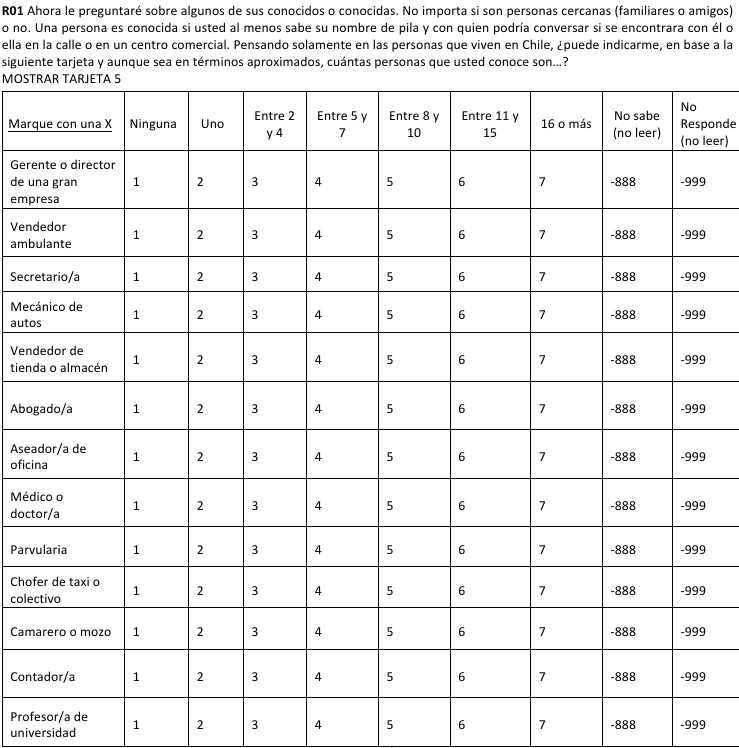
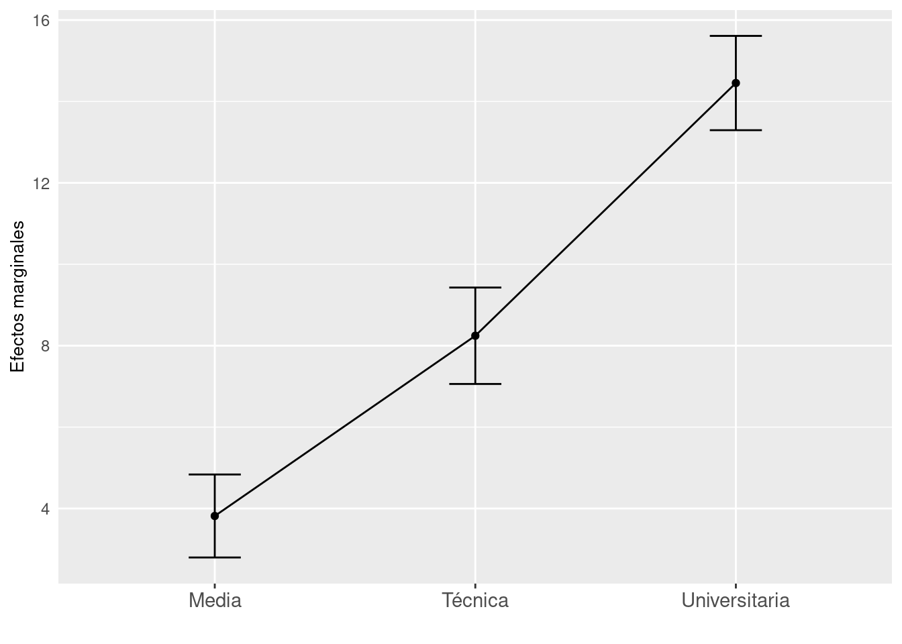
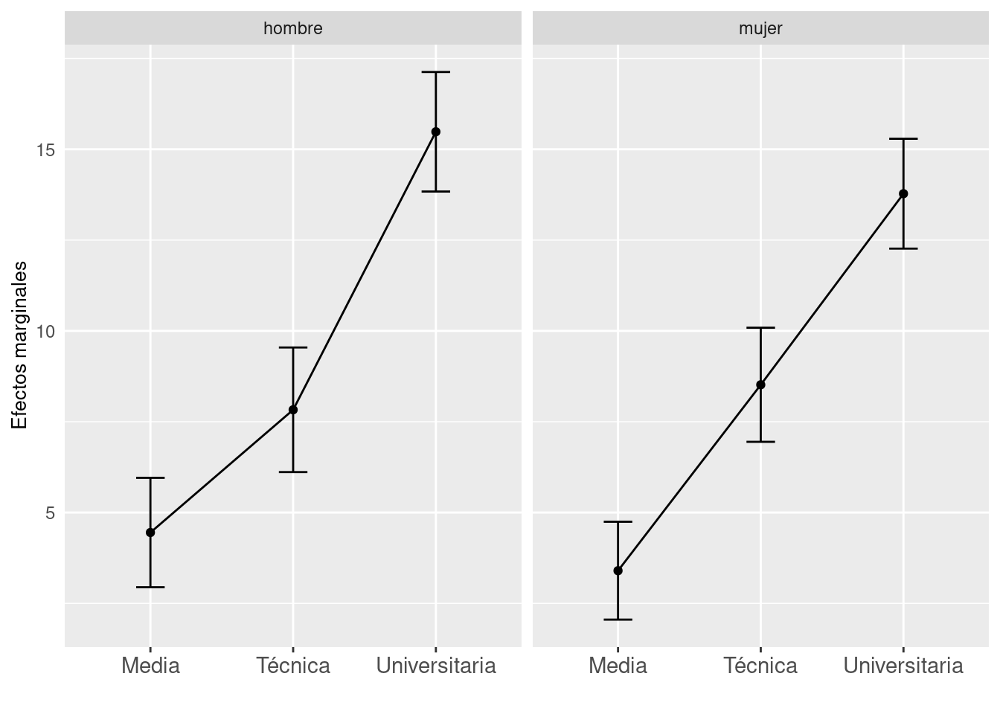
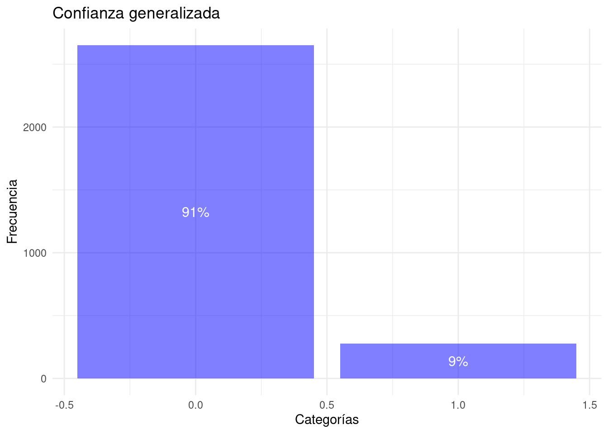
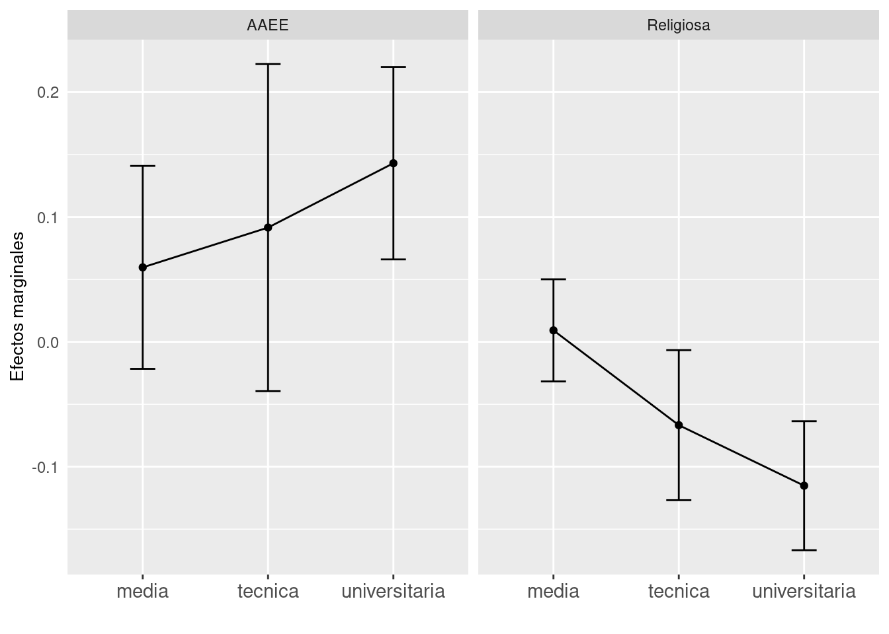

```{r, message=F}
pacman::p_load(tidymodels,
tidyverse,
kableExtra,
interplot,
margins,
sjPlot,
stargazer,
httr,
texreg)
```En este ejercicio aplicaremos un análisis de regresión lineal y lineal probabilístico, admeás de calcular efectos marginales. La pregunta sustantiva de ambos ejericios analíticos tiene relación con descubrir los determinantes de acceso a capital social de los individuos en Chile.
En la primera parte, nuestras hipótesis estarán fundamentadas en la teoría del capital social desarrolla por Lin (2002), la cual entiende el capital social como un recurso individual. Un complemento fundamental de esta teoría es el desarrollo de Burt (2007) la cual indica que las dos fuentes de capital social son la Clausura y la Intermediación. Ambas Teorías se vinculan muy estrechamente con el desarrollo del estructuralismo de redes (Wasserman and Faust 1994).
Burt, Ronald S. 2007. Brokerage and Closure: An Introduction to Social Capital. Oxford: Oxford Univ. Press.
Wasserman, Stanley, and Katherine Faust. 1994. Social Network Analysis: Methods and Applications. Structural Analysis in the Social Sciences. Cambridge: Cambridge University Press. https://doi.org/10.1017/CBO9780511815478.
En el primer ejercicio construiremos una medida de prestigio accedido mediante la red de conocidos y en el segundo utilizarmos un índice de hetegoneidad de contactos, los cuales puedes ser considerados dimensiones del capital social (Lin 2002)
Al igual que en ocasiones anteriores trabajaremos con los datos de ELSOC, en específico la Ola 1 correspondiente al año 2016.
1 Librerías
2 data (ELSOC 2016 w1)
```{r}
#ELSOC 2016
url <- "https://github.com/rcantillan/ricantillan.rbind.io/raw/main/dat/ELSOC/ELSOC_W01_v4.01_R.RData"
response <- GET(url)
local_path <- "ELSOC_W01_v4.01_R.RData"
writeBin(response$content, local_path)
load("ELSOC_W01_v4.01_R.RData")
```3 Aálisis 1 (OLS)
3.1 Construcción de variable dependiente
Siguiendo la teoría de Lin (2002) una dimensión relevante del capital social es el prestigio. A continuación trabajamos con el instrumento llamado “generador de posiciones” (Perry, Pescosolido, and Borgatti 2018; Lin, Fu, and Hsung 2017) presente en la encuesta ELSOC.
Lin, Nan. 2002. Social Capital: A Theory of Social Structure and Action. 1. paperback ed. Structural Analysis in the Social Sciences 19. Cambridge: Cambridge Univ. Press.
Perry, Brea L., Bernice A. Pescosolido, and Stephen P. Borgatti. 2018. Egocentric Network Analysis: Foundations, Methods, and Models. Structural Analysis in the Social Sciences. Cambridge, UK ; New York, NY: Cambridge University Press.
Lin, Nan, Yang-chih Fu, and Ray-May Hsung. 2017. “The Position Generator: Measurement Techniques for Investigations of Social Capital.” In Social Capital, 57–81. Routledge.

Para la construcción de la variable dependiente le imputaremos un valor de prestigio ISEI a cada una de las ocupaciones
3.2 Descriptivos
```{r}
occupation<-c("Physician","Attorney","University professor","CEO","Assistant in office","Bookkeeper","Sales-person",
"Preschool teacher","Car mechanic","Waiter/waitress","Taxi driver","Street vendor","Cleaner in office")
sample<-c(53.5,50.3,45.6,44.1,61.2,55.4,68.4,62.1,68.4,33.2,32.3,34.1,45.8)
male<-c(50.9,49.7,46.9,51.3,61.6,58.4,67.2,59.8,74.6,38.1,66.6,39.3,47.2)
female<-c(56.1,50.8,44.4,37.0,60.6,52.6,69.6,64.4,62.3,28.4,58.1,28.7,44.5)
isei<-c(88,85,77,70,53,51,43,43,34,34,30,28,16)
pg<-tibble(occupation,sample,male,female,isei)
pg %>%
kbl(caption = "Percent respondents with access to occupations of the positional generator. Chile 2016. ISEI scores according to Ganzeboom & Treiman (1996)") %>% kable_classic("hover", full_width = T)
```| occupation | sample | male | female | isei |
|---|---|---|---|---|
| Physician | 53.5 | 50.9 | 56.1 | 88 |
| Attorney | 50.3 | 49.7 | 50.8 | 85 |
| University professor | 45.6 | 46.9 | 44.4 | 77 |
| CEO | 44.1 | 51.3 | 37.0 | 70 |
| Assistant in office | 61.2 | 61.6 | 60.6 | 53 |
| Bookkeeper | 55.4 | 58.4 | 52.6 | 51 |
| Sales-person | 68.4 | 67.2 | 69.6 | 43 |
| Preschool teacher | 62.1 | 59.8 | 64.4 | 43 |
| Car mechanic | 68.4 | 74.6 | 62.3 | 34 |
| Waiter/waitress | 33.2 | 38.1 | 28.4 | 34 |
| Taxi driver | 32.3 | 66.6 | 58.1 | 30 |
| Street vendor | 34.1 | 39.3 | 28.7 | 28 |
| Cleaner in office | 45.8 | 47.2 | 44.5 | 16 |
3.3 Crear una variable de prestigio accedido
```{r}
elsoc_2016[elsoc_2016=="-999"] <- NA
elsoc_2016[elsoc_2016=="-888"] <- NA
el<-elsoc_2016 %>%
dplyr::select(idencuesta,r01_01,r01_02,r01_03,r01_04,r01_05,r01_06,r01_07,r01_08,r01_09,r01_10,r01_11,r01_12,r01_13)%>%
pivot_longer(!idencuesta, names_to = "ocup", values_to = "count")%>%
mutate(isei=case_when(ocup=="r01_01"~70,
ocup=="r01_02"~28,
ocup=="r01_03"~53,
ocup=="r01_04"~34,
ocup=="r01_05"~43,
ocup=="r01_06"~85,
ocup=="r01_07"~16,
ocup=="r01_08"~88,
ocup=="r01_09"~43,
ocup=="r01_10"~30,
ocup=="r01_11"~34,
ocup=="r01_12"~51,
ocup=="r01_13"~77)) %>%
mutate(count=case_when(count==1~0,
count==2~1,
count==3~2,
count==4~3,
count==5~4,
count==6~5,
count==7~6))%>%
group_by(idencuesta) %>%
summarize(promedio_isei = weighted.mean(isei, w = count))
```3.5 Unir con datos originales y seleccionamos variables de análisis
```{r}
el<-left_join(el, elsoc_2016, by="idencuesta")%>%
mutate_at(vars(matches("c12")), ~ifelse(. < 2, 0, 1)) %>% # se reduce una línea.
dplyr::mutate (sexo = case_when(m0_sexo == 1 ~ "hombre",
m0_sexo == 2 ~ "mujer")) %>%
#dplyr::mutate (edad = case_when(m0_edad %in% 18:29 ~ "joven",
# m0_edad %in% 30:65 ~ "adulto",
# m0_edad %in% 66:88 ~ "adulto_mayor")) %>%
dplyr::mutate (nivel_educ = case_when(m01 %in% 1:3 ~ "basica",
m01 %in% 4:5 ~ "media",
m01 %in% 6:7 ~ "tecnica",
m01 %in% 8:10~ "universitaria"))%>%
dplyr::mutate(confianza = case_when(c02==1~1,
TRUE~0))%>%
dplyr::select(JJVV=c12_01, Religiosa=c12_02, AAEE=c12_03, Deportiva=c12_04,
Partido=c12_05, Profesional=c12_06, Sindicato=c12_07, Caridad=c12_08,
Otras=c12_09, sexo,m0_edad,nivel_educ, promedio_isei, confianza, ponderador02)
```3.6 modelo de regresión.
```{r}
m1<-lm(promedio_isei~
+ sexo
+ m0_edad
+ I(m0_edad^2)
+ nivel_educ
+ sexo*nivel_educ
+ JJVV
+ Religiosa
+ AAEE
+ Deportiva
+ Partido
+ Profesional
+ Sindicato
+ Caridad
+ Otras, data=el, weights = ponderador02)
``````{r, results = "asis", message=FALSE}
stargazer(m1, style="ajs", type = 'html', single.row = TRUE)
```| PROMEDIO_ISEI | |
| sexomujer | 2.164* (.862) |
| m0_edad | -.027 (.069) |
| I(m0_edad2) | .002* (.001) |
| nivel_educmedia | 4.450*** (.768) |
| nivel_eductecnica | 7.828*** (.875) |
| nivel_educuniversitaria | 15.482*** (.839) |
| JJVV | -.026 (.419) |
| Religiosa | -.106 (.411) |
| AAEE | 2.478** (.795) |
| Deportiva | -.809 (.599) |
| Partido | 1.027 (.659) |
| Profesional | .260 (.581) |
| Sindicato | -1.554** (.503) |
| Caridad | -.323 (.908) |
| Otras | .494 (.893) |
| sexomujer:nivel_educmedia | -1.051 (1.019) |
| sexomujer:nivel_eductecnica | .689 (1.167) |
| sexomujer:nivel_educuniversitaria | -1.705 (1.099) |
| Constant | 37.836*** (1.669) |
| Observations | 2,674 |
| R2 | .260 |
| Adjusted R2 | .255 |
| Residual Std. Error | 9.024 (df = 2655) |
| F Statistic | 51.744*** (df = 18; 2655) |
| Notes: | *P < .05 |
| **P < .01 | |
| ***P < .001 | |
3.7 Efectos marginales
```{r}
me<-summary(margins(m1, variables = c("nivel_educ")))
glimpse(me)
```Rows: 3
Columns: 7
$ factor <chr> "nivel_educmedia", "nivel_eductecnica", "nivel_educuniversitari…
$ AME <dbl> 3.815745, 8.244105, 14.452867
$ SE <dbl> 0.5203721, 0.6043820, 0.5910316
$ z <dbl> 7.332724, 13.640553, 24.453626
$ p <dbl> 2.255213e-13, 2.298124e-42, 4.604678e-132
$ lower <dbl> 2.795834, 7.059538, 13.294466
$ upper <dbl> 4.835656, 9.428672, 15.611268```{r}
me%>%
ggplot(aes(x =factor, y= AME)) +
geom_point() +
geom_line(group="factor") +
geom_errorbar(aes(ymin = lower, ymax = upper), alpha = 1, width=0.2)+
xlab("") +
ylab("Efectos marginales")+
scale_x_discrete(labels=c("nivel_educmedia" = "Media",
"nivel_eductecnica" = "Técnica",
"nivel_educuniversitaria" = "Universitaria"))+
theme(axis.ticks.y=element_blank(),
legend.position = "right",
plot.title = element_text(hjust = 0.5, size = 9),
axis.title = element_text(size=10),
axis.text.x = element_text(size=11),
axis.text.y = element_text(size = 9),
legend.text = element_text(size = 10),
legend.title = element_text(face = "bold",
size = 10))
```
```{r}
me2 <- summary(margins(m1, at = list(sexo = c("hombre", "mujer")), variables = "nivel_educ"))
me2 %>% kbl(caption = "Efectos marginales") %>% kable_classic("hover", full_width = T)
```| factor | sexo | AME | SE | z | p | lower | upper |
|---|---|---|---|---|---|---|---|
| nivel_educmedia | hombre | 4.450080 | 0.7684954 | 5.790640 | 0e+00 | 2.943857 | 5.956303 |
| nivel_educmedia | mujer | 3.399143 | 0.6873562 | 4.945242 | 8e-07 | 2.051950 | 4.746337 |
| nivel_eductecnica | hombre | 7.828452 | 0.8750124 | 8.946676 | 0e+00 | 6.113459 | 9.543444 |
| nivel_eductecnica | mujer | 8.517086 | 0.8012547 | 10.629686 | 0e+00 | 6.946656 | 10.087516 |
| nivel_educuniversitaria | hombre | 15.481754 | 0.8393175 | 18.445645 | 0e+00 | 13.836721 | 17.126786 |
| nivel_educuniversitaria | mujer | 13.777142 | 0.7715255 | 17.857014 | 0e+00 | 12.264980 | 15.289304 |
```{r}
me2%>%
ggplot(aes(x =factor, y= AME)) +
geom_point() +
geom_line(group="factor") +
geom_errorbar(aes(ymin = lower, ymax = upper), alpha = 1, width=0.2)+
facet_grid(.~sexo) +
scale_x_discrete(labels=c("nivel_educmedia" = "Media",
"nivel_eductecnica" = "Técnica",
"nivel_educuniversitaria" = "Universitaria"))+
xlab("") +
ylab("Efectos marginales")+
theme(axis.ticks.y=element_blank(),
legend.position = "right",
plot.title = element_text(hjust = 0.5, size = 9),
axis.title = element_text(size=10),
axis.text.x = element_text(size=11),
axis.text.y = element_text(size = 9),
legend.text = element_text(size = 10),
legend.title = element_text(face = "bold",
size = 10))
```
4 Análisis 2 (LPM)
En esta segunda parte, las hipótesis están fundamentadas en la teorización y evidencia indicada por el trabajo de Putnam (2000). La intuición simple es que la actividad asociativa incrementa el nivel de confianza generalizada percibida por los integrantes de una comunidad (nación).
Putnam, Robert D. 2000. Bowling Alone: The Collapse and Revival of American Community. New York: Simon & Schuster.
4.1 Distribución variable dependiente.
```{r warning=FALSE}
ggplot(el, aes(x = confianza, fill = confianza)) +
geom_bar(fill = "blue", alpha = 0.5) +
geom_text(aes(label = scales::percent(..count../sum(..count..))),
color="white",
stat = "count",
position = position_stack(vjust = 0.5),
size = 4) + # Agregar etiquetas de texto con porcentajes
labs(title = "Confianza generalizada",
x = "Categorías",
y = "Frecuencia") +
theme_minimal()
```
4.2 Modelos de regresión.
```{r}
m2 <-lm(confianza~
sexo
+ m0_edad
+ nivel_educ
+ JJVV
+ Religiosa
+ AAEE
+ Deportiva
+ Partido
+ Profesional
+ Sindicato
+ Caridad
+ Otras
+ Religiosa*nivel_educ
+ AAEE*nivel_educ, data=el, weights = ponderador02)
m2_logit<-glm(confianza~
sexo
+ m0_edad
+ nivel_educ
+ JJVV
+ Religiosa
+ AAEE
+ Deportiva
+ Partido
+ Profesional
+ Sindicato
+ Caridad
+ Otras
+ Religiosa*nivel_educ
+ AAEE*nivel_educ, data=el, family = "binomial", weights = ponderador02)
``````{r, results = "asis", message=FALSE, warning=FALSE}
stargazer(m2,m2_logit, style="ajs", type = 'html', single.row = TRUE)
```| CONFIANZA | ||
| OLS | logistic | |
| 1 | 2 | |
| sexomujer | .013 (.012) | .134 (.130) |
| m0_edad | .001* (0.000) | .010* (.005) |
| nivel_educmedia | -.003 (.020) | -.056 (.235) |
| nivel_eductecnica | .018 (.024) | .185 (.265) |
| nivel_educuniversitaria | .094*** (.023) | .827*** (.239) |
| JJVV | -.016 (.014) | -.187 (.163) |
| Religiosa | -.061* (.029) | -1.073* (.451) |
| AAEE | .059 (.071) | .767 (.799) |
| Deportiva | -.019 (.020) | -.191 (.234) |
| Partido | .047* (.022) | .436* (.207) |
| Profesional | -.041* (.019) | -.492* (.237) |
| Sindicato | -.025 (.017) | -.332 (.210) |
| Caridad | .032 (.029) | .430 (.301) |
| Otras | -.040 (.029) | -.510 (.398) |
| nivel_educmedia:Religiosa | .070* (.035) | 1.196* (.509) |
| nivel_eductecnica:Religiosa | -.006 (.042) | -.012 (.663) |
| nivel_educuniversitaria:Religiosa | -.054 (.039) | -.035 (.554) |
| nivel_educmedia:AAEE | .001 (.081) | -.151 (.894) |
| nivel_eductecnica:AAEE | .033 (.098) | .170 (1.027) |
| nivel_educuniversitaria:AAEE | .084 (.081) | .146 (.852) |
| Constant | .051 (.028) | -2.766*** (.320) |
| Observations | 2,830 | 2,830 |
| R2 | .038 | |
| Adjusted R2 | .031 | |
| Log Likelihood | -896.125 | |
| Akaike Inf. Crit. | 1,834.250 | |
| Residual Std. Error | .302 (df = 2809) | |
| F Statistic | 5.526*** (df = 20; 2809) | |
| Notes: | *P < .05 | |
| **P < .01 | ||
| ***P < .001 | ||
4.3 Efectos marginales
```{r}
me2<-summary(margins(m2, at = list(nivel_educ = c("media", "tecnica","universitaria")),
variables = c("Religiosa","AAEE")))
me2 %>% kbl(caption = "Efectos marginales") %>% kable_classic("hover", full_width = T)
glimpse(me2)
```| factor | nivel_educ | AME | SE | z | p | lower | upper |
|---|---|---|---|---|---|---|---|
| AAEE | media | 0.0596494 | 0.0414662 | 1.4385055 | 0.1502907 | -0.0216229 | 0.1409217 |
| AAEE | tecnica | 0.0915453 | 0.0668558 | 1.3692937 | 0.1709075 | -0.0394897 | 0.2225802 |
| AAEE | universitaria | 0.1430496 | 0.0392997 | 3.6399708 | 0.0002727 | 0.0660237 | 0.2200755 |
| Religiosa | media | 0.0092004 | 0.0208647 | 0.4409531 | 0.6592469 | -0.0316938 | 0.0500945 |
| Religiosa | tecnica | -0.0667241 | 0.0306556 | -2.1765689 | 0.0295127 | -0.1268080 | -0.0066402 |
| Religiosa | universitaria | -0.1152132 | 0.0263564 | -4.3713563 | 0.0000123 | -0.1668707 | -0.0635556 |
Rows: 6
Columns: 8
$ factor <chr> "AAEE", "AAEE", "AAEE", "Religiosa", "Religiosa", "Religios…
$ nivel_educ <fct> media, tecnica, universitaria, media, tecnica, universitaria
$ AME <dbl> 0.059649411, 0.091545253, 0.143049611, 0.009200372, -0.0667…
$ SE <dbl> 0.04146624, 0.06685582, 0.03929966, 0.02086474, 0.03065563,…
$ z <dbl> 1.4385055, 1.3692937, 3.6399708, 0.4409531, -2.1765689, -4.…
$ p <dbl> 1.502907e-01, 1.709075e-01, 2.726690e-04, 6.592469e-01, 2.9…
$ lower <dbl> -0.02162292, -0.03948974, 0.06602369, -0.03169376, -0.12680…
$ upper <dbl> 0.14092174, 0.22258025, 0.22007553, 0.05009451, -0.00664016…```{r}
me2%>%
ggplot(aes(x =nivel_educ, y= AME)) +
geom_point() +
geom_line(group="nivel_educ") +
geom_errorbar(aes(ymin = lower, ymax = upper), alpha = 1, width=0.2)+
facet_grid(.~factor) +
scale_x_discrete(labels=c("nivel_educmedia" = "Media",
"nivel_eductecnica" = "Técnica",
"nivel_educuniversitaria" = "Universitaria"))+
xlab("") +
ylab("Efectos marginales")+
theme(axis.ticks.y=element_blank(),
legend.position = "right",
plot.title = element_text(hjust = 0.5, size = 9),
axis.title = element_text(size=10),
axis.text.x = element_text(size=11),
axis.text.y = element_text(size = 9),
legend.text = element_text(size = 10),
legend.title = element_text(face = "bold",
size = 10))
```
.